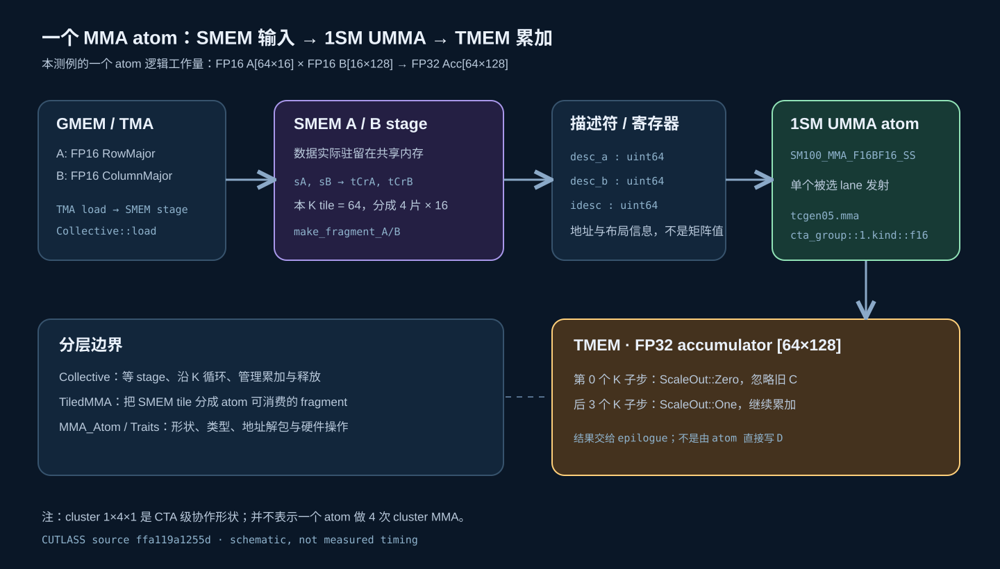
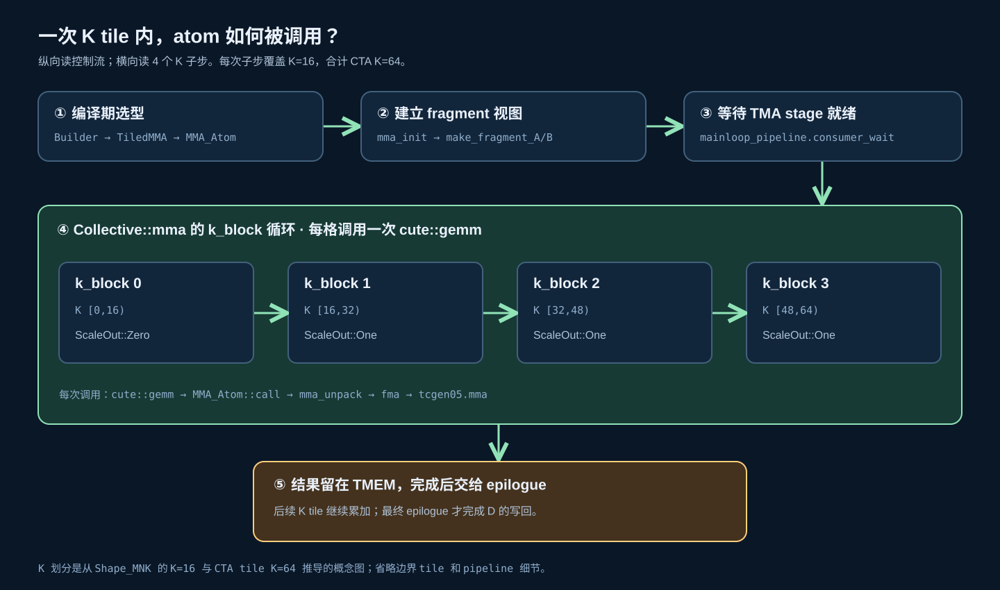
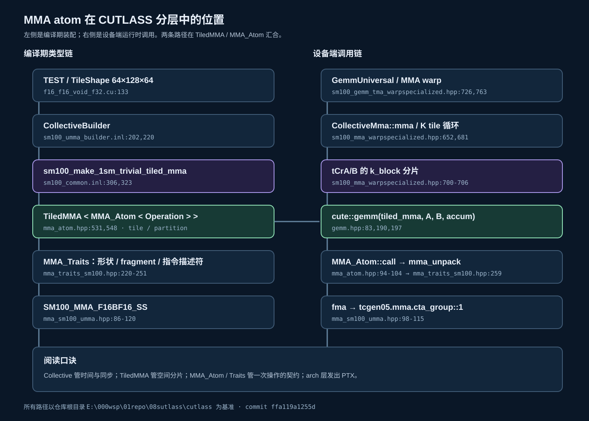

01 · BUILDER
选型发生在编译期
FP16、64×128×64、Auto schedule 与 cluster M=1，使 Builder 走 1SM 分支，生成 SM100_MMA_F16BF16_SS 的 TiledMMA。
以 64x128x64_1x4x1_1sm 测例为例，从 Builder 选出硬件操作，到 SMEM 描述符传入指令、FP32 在 TMEM 累加。按“架构 → K 子步 → 调用树 → 卡片”阅读。
atom 消费的是共享内存中 A/B 的描述符；描述符在寄存器里，矩阵数值仍在 SMEM。一个被选中的 lane 发射 tcgen05.mma.cta_group::1.kind::f16，输出地址指向 TMEM 中的 FP32 accumulator。

“SS”表示 A/B 均走共享内存描述符；“1SM”指本 atom 使用 cta_group::1。测试里的 1×4×1 是 CTA cluster 形状，属于更外层。
CTA tile 的 K 是 64；MMA_Traits 将 FP16 atom 的逻辑 K 定义为 256 bit / 16 bit = 16。在本测例的分片下，一个 K tile 便由四个 K 子步覆盖。CollectiveMma::mma 的 k_block 循环对每个子步调用 cute::gemm。

ScaleOut::Zero 令旧 accumulator 不参与，计算后结果位于 TMEM。四个子步是对同一 CTA K tile 的计算分片，不等于四次独立 TMA 加载；后续 K tile 也会继续使用 ScaleOut::One 累加。
左列显示模板如何确定 atom 类型，右列显示运行时怎样抵达指令。TiledMMA 把 atom 放到 tile 的空间分片中；CollectiveMma 负责 stage 和 K 循环；MMA_Atom 把一次操作交给 traits 解包与架构层。

每张只记住一个职责或容易混淆的概念。
FP16、64×128×64、Auto schedule 与 cluster M=1，使 Builder 走 1SM 分支，生成 SM100_MMA_F16BF16_SS 的 TiledMMA。
等待 TMA stage 就绪、选读取 stage、遍历 K 子步、设置累加模式并释放 stage。它不是一条硬件 MMA 指令。
make_fragment_A/B 将 SMEM tile 表示为 MMA 可消费的片段/描述符，按 k_block 取出当前子片。
MMA_Atom 包装操作和 traits；本例一次逻辑操作是 64×128×16。Atom 与 atomicAdd 的“原子性”无关。
A/B 数据在 SMEM；desc_a、desc_b 是 64 位寄存器值，包含供硬件访问 SMEM 的信息。
FrgTypeC 为 tmem_frg_1sm<float>。atom 写的是 TMEM accumulator，最终 D 由后续 epilogue 处理。
Zero 忽略旧 accumulator；首次 cute::gemm 后切到 One，后续子步与 K tile 都累加。
elect_one_sync() 选出发射者，再执行 tcgen05.mma.cta_group::1.kind::f16。这不是“一个 lane 算完全部乘加”。
1×4×1 表示 cluster 的 CTA 排布；一个 K tile 的四次 atom 子步来自 64/16，两者是不同层级。
以下链接指向本机 CUTLASS 快照中的入口；行号基于 ffa119a1255d。
test/unit/gemm/device/sm100_tensorop_gemm/f16_f16_void_f32.cu
1SM 选型 · 444–475, 306–324include/cutlass/gemm/collective/builders/sm100_common.inl
stage 与 K 子步 · 552–567, 676–708include/cutlass/gemm/collective/sm100_mma_warpspecialized.hpp
TiledMMA / MMA_Atom · 94–104, 531–553include/cute/atom/mma_atom.hpp
逻辑形状与解包 · 220–279include/cute/atom/mma_traits_sm100.hpp
PTX 指令 · 86–120include/cute/arch/mma_sm100_umma.hpp
图示按源码结构绘制，K 子步区间是逻辑示意；没有在 SM100 硬件上运行或测量这段 atom。